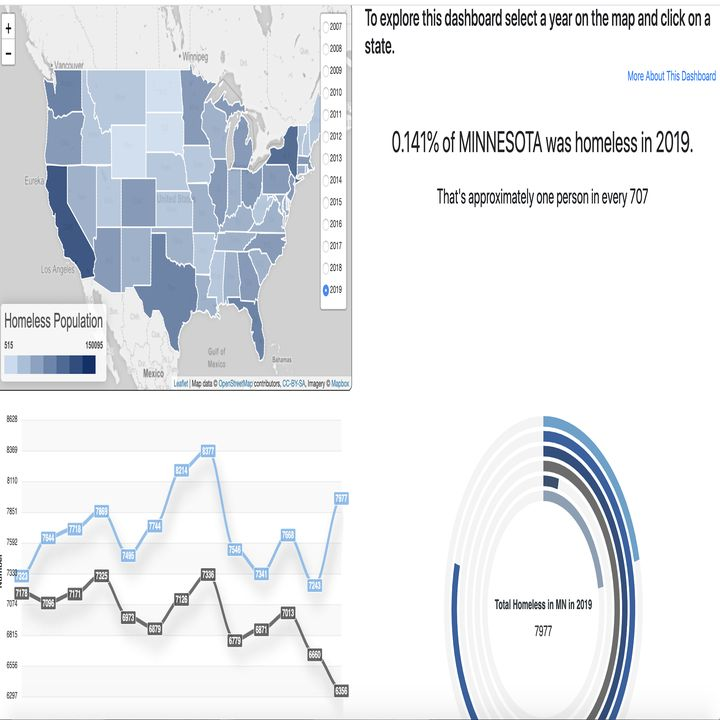
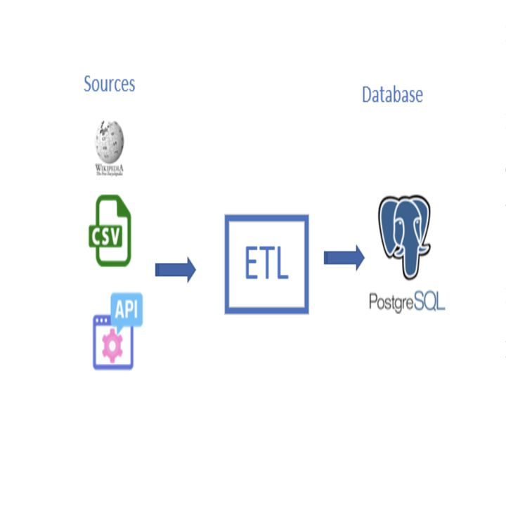
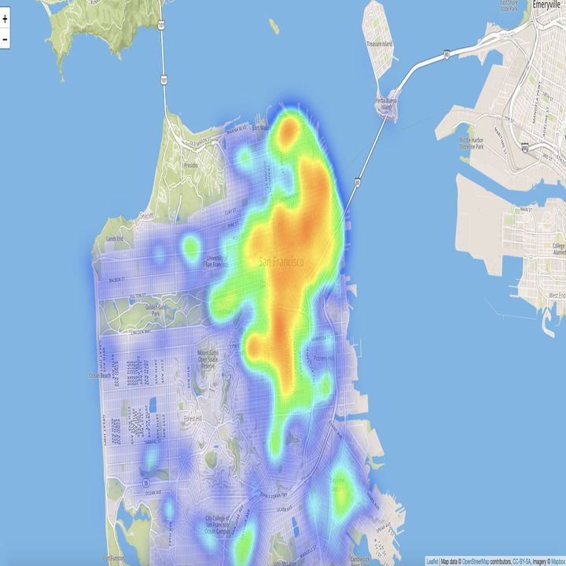
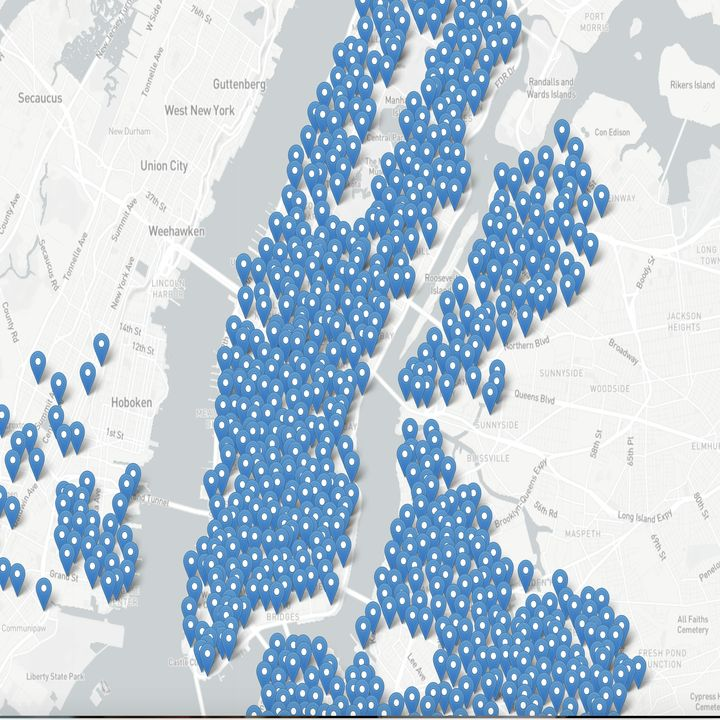
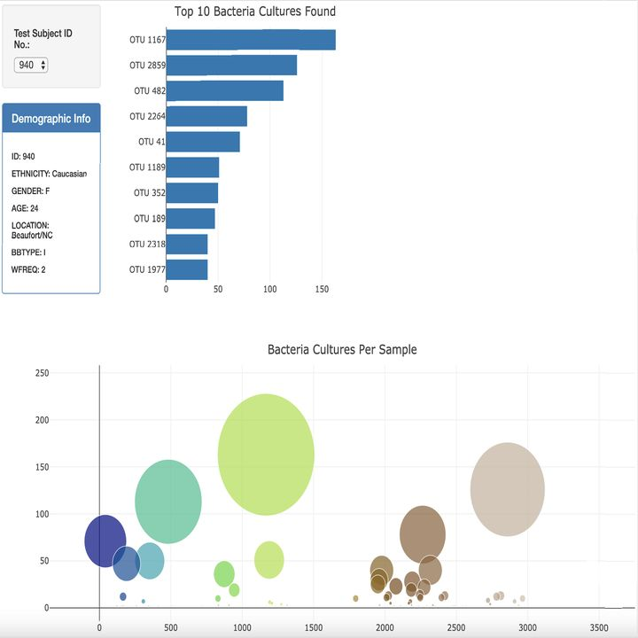
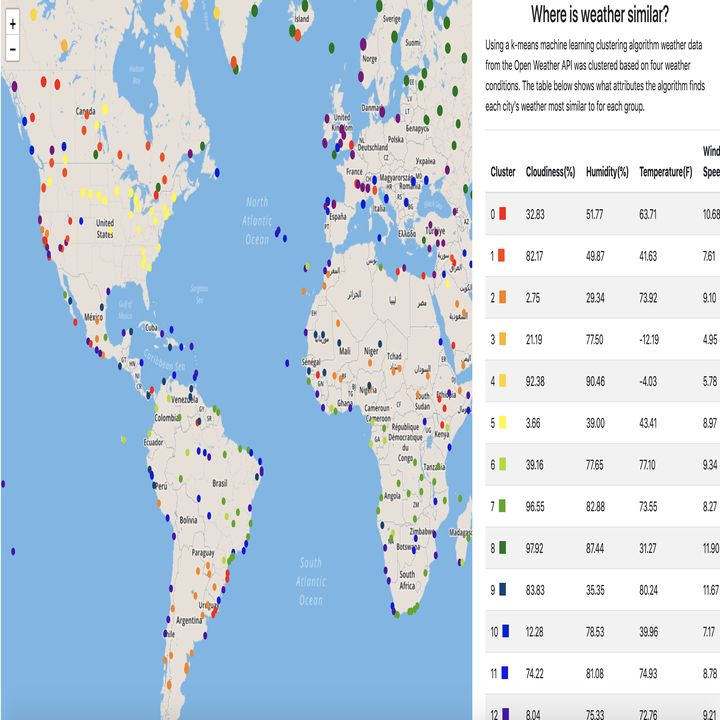
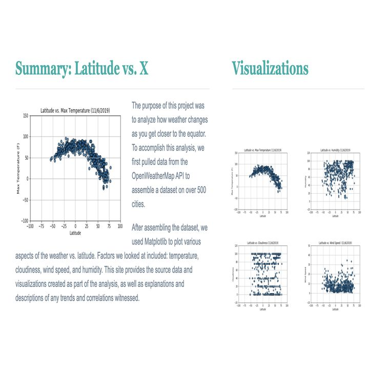

About
Security that starts with the data
I am a technology professional with experience spanning Data Governance, Cybersecurity, operations analytics, and Cloud Security. As a Data Governance Engineer, I support metadata management, data quality, lineage, access governance, and regulatory compliance across enterprise data platforms. My cybersecurity experience includes risk assessments, security monitoring, incident response, identity and access management, control testing, and remediation tracking. My operations background strengthens my ability to analyze complex data, develop performance dashboards, automate reporting, identify process improvements, and translate technical findings into business decisions. I also apply cloud security, Linux, Python, SQL, containerization, and infrastructure automation skills to help build secure, scalable, and well-governed technology environments. I am passionate about connecting data, security, cloud, and business strategy to improve reliability, reduce risk, and create measurable organizational value.
- Education
- M.S. Aviation Cybersecurity
- Certifications
- CompTIA Security+
CompTIA CySA+ - Seeking
- Remote cloud security, GRC & cyber roles
Experience
Flight log
Most recent first.
-
Apr 2024 – Present
CurrentData Governance Engineer
FedEx Corporation
- Worked with stakeholders to define the KPI metrics behind a governance SharePoint site that tracks each team's adherence to data standards and data quality.
- Support enterprise data standards and quality controls so security, compliance, and analytics teams can trust the data they rely on.
- Mentor and train new and junior analysts on governance processes, procedures, and workflows.
-
Dec 2022 – Apr 2024
Cybersecurity Analyst
FedEx Corporation
- Monitored, investigated, and documented security events across enterprise systems.
- Escalated confirmed issues and worked with system owners on remediation.
- Built the security foundation that now shapes how I approach data governance and cloud controls.
-
Oct 2022 – Apr 2023
Remote contractSecurity Operations Center Analyst
Daggers Group of Companies
- Worked in a managed security service (MSSP) setting, supporting multiple client organizations.
- Triaged and investigated alerts, separated true threats from noise, and escalated incidents to client teams.
-
Nov 2018 – Dec 2022
Operations Analyst
FedEx Ground
- Led a quarterly cost-reduction project through departmental budget and spend analysis, identifying unused procured material and cutting costs by 30%.
- Presented operational and financial information to stakeholders in Google Sheets for review and approval.
Skills
What I bring
Security operations
Monitoring, triage, and investigation in enterprise and MSSP environments.
- SIEM alert triage
- Incident investigation
- Escalation & documentation
- Threat analysis
- Vulnerability management
Data governance & GRC
Turning data standards into measurable, trackable practice.
- Data standards & quality
- KPI & metric design
- Governance reporting
- SharePoint governance sites
- Policy & process documentation
- Analyst training
Cloud security
My current focus, built on security and governance fundamentals.
- Identity & access management
- Shared responsibility model
- Cloud logging & monitoring
- Data protection & classification
- Security baselines
Data & analysis
The analytics background behind my governance work.
- SQL
- Python
- Tableau
- SSIS / ETL
- Google Sheets
- Stakeholder reporting
Flight plan
Route to cloud security
Each leg builds on the last: see the threats, govern the data, then secure the platforms that hold it.
WPT 1 · OPSOperations
Learned how logistics data is created and used, and where money and time leak.
WPT 2 · SOCDetection
SOC and cybersecurity analyst work. Security+ and CySA+ certified.
WPT 3 · GOVGovernance
Data standards, quality KPIs, and the reporting that holds teams to them.
DEST · CLDCloud security
Securing airline cloud environments: identity, logging, and data protection.
EDUCATION ON BOARD: M.S. AVIATION CYBERSECURITY · TARGET: REMOTE ROLES AT MAJOR U.S. AIRLINES
Earlier work
Data projects
Analytics and ETL projects from before my move into security. They show the data skills I still use every day in governance.

U.S. homelessness
Dashboard of homelessness by state, 2007–2019.
Dashboard
ETL pipeline
Extracting, cleaning, and loading data into a relational database.
Python · SQL
SF crime heat map
Heat map of reported crime areas in San Francisco.
Leaflet · JavaScript
Citi Bike NYC
Interactive map of station locations and bike availability.
Mapping · API
Biodiversity dashboard
Interactive charts of microbes found in human navels.
Plotly
Weather clustering
Groups cities around the world with similar weather.
Machine learning
Latitude & weather
How weather changes as you approach the equator.
Python · HTMLContact
Let's talk
Hiring for cloud security, GRC, or cybersecurity? I'd like to hear about the role.
ejose1921@gmail.com